beidseitig galoisscher Zwischenkörper induziert Gruppenepimorphismus der Galoisgruppen
1. Satz
2. Beweis
2.1. wohldefinierte abbildung
Sei 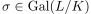, so ist für einen algebraischen Abschluss
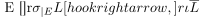
ein K-homomorphismus.
Nach normale Körpererweiterung induziert K-Automorphismus existiert folglich
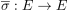
Damit ist  eine wohldefinierte abbildung
eine wohldefinierte abbildung
2.2. gruppenhomomorphismus
folgt als presheaf für den kontravarianten hom-functor, d.h. es gilt
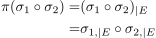
2.3. surjektiv
Sei 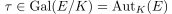 Dann existiert für einen algebraischen Abschluss 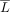 der Morphismus 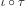
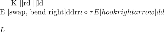
Nach dem Fortsetzungssatz für Körpererweiterungen existiert damit eine Fortsetzung
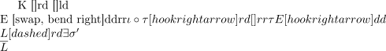
Nach der Charakterisierung von normalen Körpererweiterungen existiert folglich der K-Automorphismus
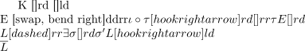
Nach Konstruktion kommutiert das diagram, d.h. es gilt auch
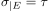
und damit
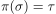
d.h. die Abbildung ist surjektiv